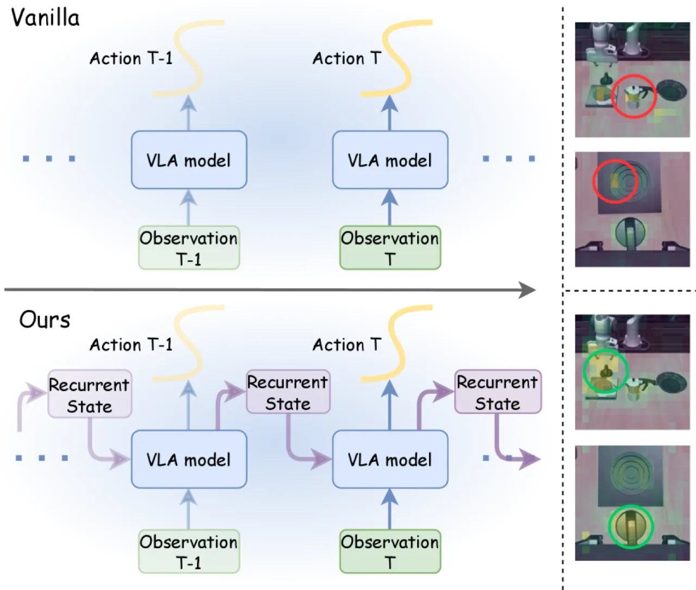
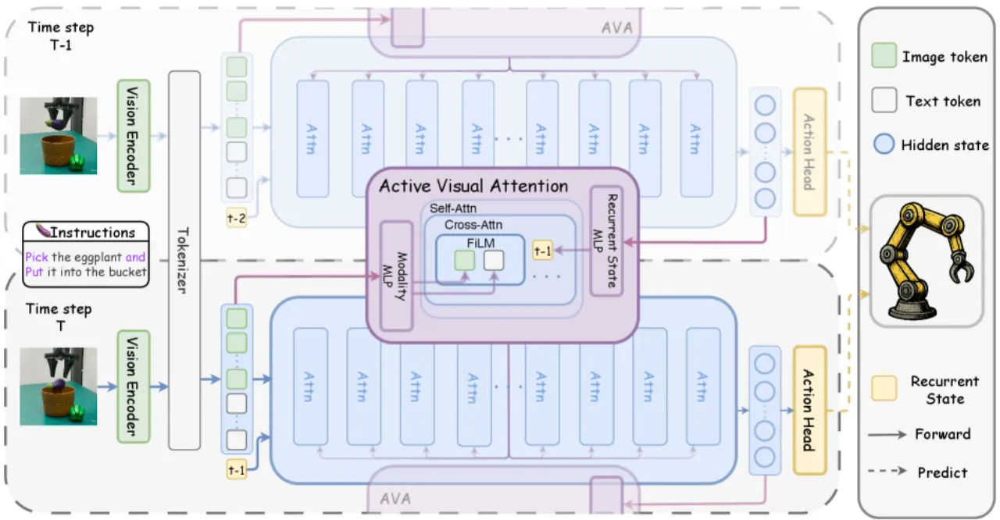
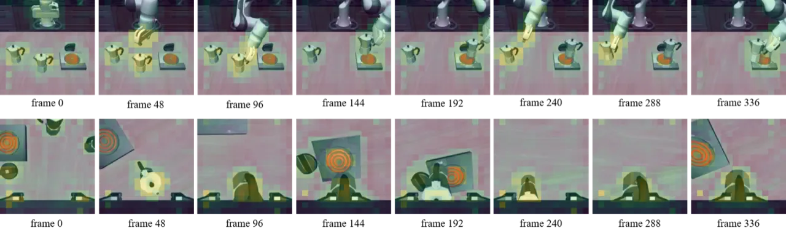
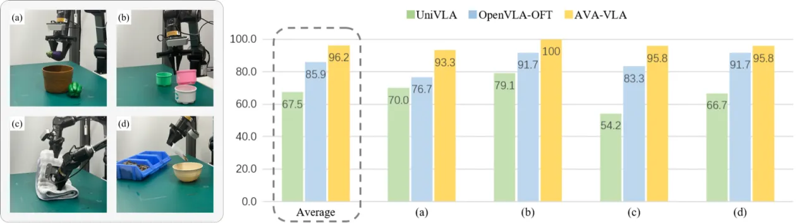

AVA-VLA 将 VLA（Vision-Language-Action）策略学习重新表述为 POMDP（Partially Observable Markov Decision Process）， 通过引入循环历史状态来近似任务信念，并设计主动视觉注意力（Active Visual Attention）模块， 根据指令与执行历史动态重加权视觉 token——在 LIBERO 和 CALVIN 等机器人操作基准上达到最先进水平， 并成功迁移至真实双臂机械手平台。
现有 VLA 模型在每个时间步独立处理视觉观测，将机械手操作当作 Markov Decision Process（MDP）来求解。 然而机器人操作本质上是部分可观测的，依赖历史交互才能完成精确判断。 以静态语言指令引导的视觉注意力，被迫在每个决策步从零重新评估视觉信息， 无法抑制时序冗余信息，也无法聚焦因过去动作而变得关键的区域。
"by processing frames in isolation, the visual attention weights, guided by the static language instruction, are forced to re-evaluate the independent visual information from scratch at each decision step."

AVA-VLA 将 VLA 策略重新表述为 POMDP：动作生成不仅依赖当前观测， 还依赖对任务历史信念的循环近似状态。 核心模块是 Active Visual Attention（AVA）， 它将循环状态与语言条件化视觉特征融合， 生成 soft importance scores 对骨干 LLM 中所有层的视觉 token 注意力矩阵进行调制。

将策略形式化为：Āt ~ Pθ(At | xt, bt-1)， 其中 bt-1 捕获"all relevant historical context, including observations and actions"。 由于理论信念状态难以精确计算，方法学习一个压缩的循环表示 rt-1， 作为"a neural approximation"，从上一时间步动作相关的 LLM 隐藏状态提取，通过 MLP 模块 ℬ 投影。
AVA 模块依次执行以下操作：
采用截断反向传播（truncated BPTT），时间窗口 T=4，平衡计算可行性与时序动态学习。 同时引入 L2 正则化损失 ℒωt,n = ‖μ(ωt,n) − c‖， 约束注意力权重均值接近目标常数 c，使模型"focus on task-relevant regions while suppressing distracting background responses"。 超参数：LIBERO 中 λ=1.0, c=0.6, γ=[1.9, 0.1]；CALVIN 中 c=0.2。

在 LIBERO（4 个套件：Spatial / Object / Goal / Long）、CALVIN（ABC→D 零样本泛化） 以及真实 Mobile ALOHA 双臂机械手平台上进行全面评估， 主要对比基线为 OpenVLA-OFT。评估指标为任务成功率（SR %）和 CALVIN 平均链长（Avg. len）。
| 方法 | Spatial SR (%) | Object SR (%) | Goal SR (%) | Long SR (%) | Average SR (%) |
|---|---|---|---|---|---|
| OpenVLA-OFT | 97.7 | 98.0 | 96.1 | 95.3 | 96.8 |
| AVA-VLA（ours） | 97.4 | 99.4 | 97.4 | 97.6 | 98.0 |
| 方法 | Spatial SR (%) | Object SR (%) | Goal SR (%) | Long SR (%) | Average SR (%) |
|---|---|---|---|---|---|
| OpenVLA-OFT | 97.6 | 98.4 | 97.9 | 94.5 | 97.1 |
| AVA-VLA（ours） | 99.2 | 99.6 | 97.9 | 96.2 | 98.2 |
| 方法 | 1 Task | 2 Tasks | 3 Tasks | 4 Tasks | 5 Tasks | Avg. len |
|---|---|---|---|---|---|---|
| OpenVLA-OFT | 96.9 | 92.0 | 85.7 | 80.4 | 72.9 | 4.28 |
| AVA-VLA（ours） | 99.6 | 97.6 | 94.1 | 89.9 | 84.1 | 4.65 |

组件消融（LIBERO 多任务，Table 4）： 仅使用状态初始化（State-based initialization only）得到 97.5% 平均 SR； 仅使用 AVA 模块（AVA module only）同样得到 97.5%； 两者结合（AVA module + State init）达到最优 98.0%， 说明循环状态初始化与 AVA 模块相互配合缺一不可。
骨干网络泛化性（Table 3，LIBERO-Long）： 在 OpenVLA-7B（+1.7%）、LLaMA2-7B（+2.6%）、Qwen2.5-0.5B（+1.4%）三种骨干上 AVA-VLA 均优于对应的 OpenVLA-OFT 基线，表明方法的骨干无关性。
视觉 token 剪枝（Table 5）： 剪枝比例 ≤70% 时性能保持在 97.3% 以上；剪枝 80% 降至 96.0%；剪枝 90% 降至 93.9%， 表明 AVA 学到的权重具有稀疏性，在轻度剪枝下可加速推理而几乎不损性能。
论文采用时间窗口 T=4 的截断反向传播（truncated BPTT）， 这是"practical trade-off"而非最优的时序建模。 对需要超长历史推理的任务，有限时间窗口可能无法捕获足够的历史依赖。
训练时对历史轨迹的展开（trajectory unrolling）带来额外的内存开销， 在显存受限的平台上增加了部署难度，可能限制批大小或序列长度。
方法需要针对不同任务分布手动调整超参数（λ, c, γ）， 例如 LIBERO 中 c=0.6 而 CALVIN 中 c=0.2。 跨域泛化时可能需要重新调参，降低了开箱即用性。
论文指出方法对循环状态初始化存在一定敏感性， 不良的初始化可能影响早期时间步的动作生成质量， 尤其在任务开始阶段历史信息缺乏时。
真实机器人实验仅在 Mobile ALOHA 双臂机械手平台上展开， 对更广泛的机器人形态（如移动机器人、单臂操作、灵巧手）的泛化能力尚未评估。